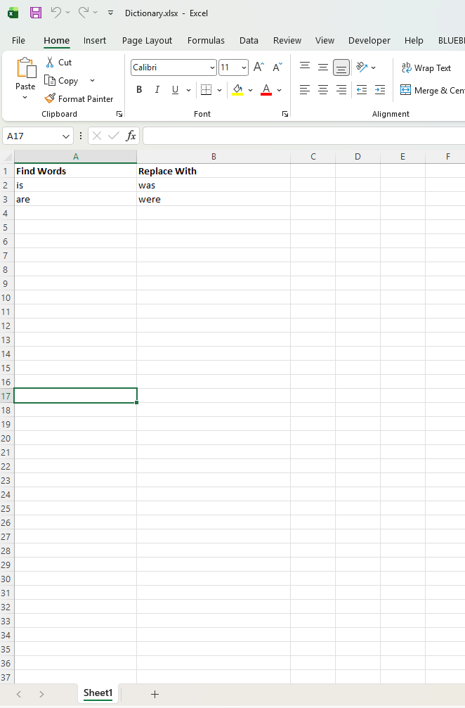
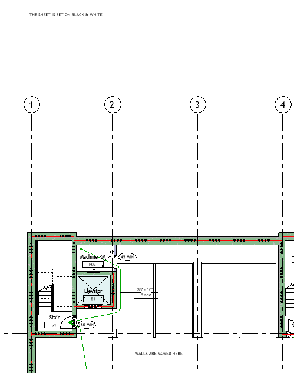
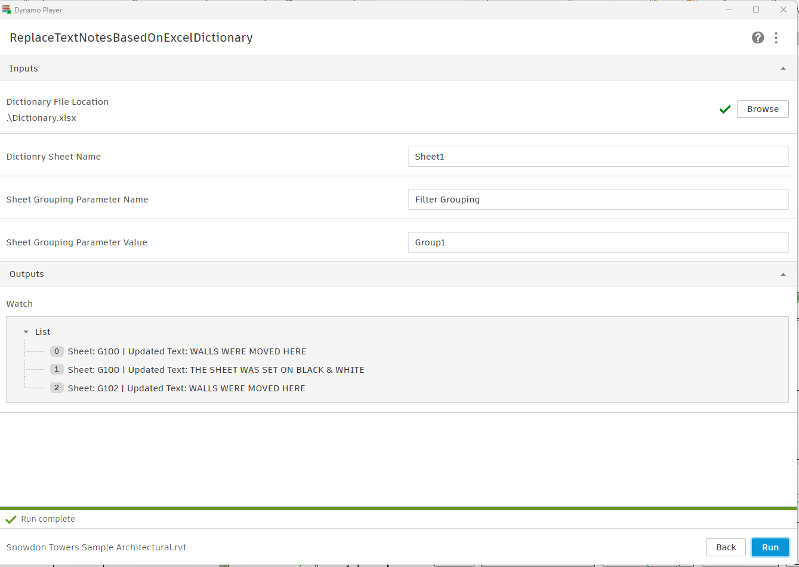
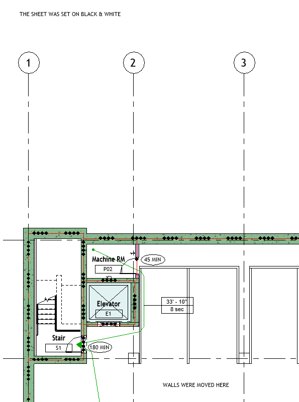

BIM AUTOMATION + AI
SAMPLE PROJECTS
These are 3 automation projects, namely a Populate Multiple Sheet Parameter, Replacing text notes based on excel dictionary, and an asbuilt text note updater with AI. These are run through Revit 2025's sample architecture project Snowdown towers.
1. Populate Multiple Title Block Sheet Parameters
The Problem: Revit title blocks contain multiple parameters whose values frequently change throughout a project's duration. In practice, managing these changes typically relies on two manual methods: generating a sheet list schedule to input values cell-by-cell, or selecting individual sheets to update their properties via the Properties palette. Both approaches are incredibly tedious and time-consuming, scaling poorly when dealing with dozens or hundreds of sheets across a large-scale project.

This script streamlines sheet management by allowing users to batch-populate parameters across multiple sheets simultaneously. To keep the workflow organized, sheets are dynamically grouped based on a user-selected grouping parameter. Users input their target parameter names and desired values through an intuitive, interactive UI, which also offers the flexibility to dynamically add and modify multiple parameters in a single run. Upon completion, the script generates a comprehensive execution report that highlights successful updates, identifies errors or missing parameters, and explicitly flags the affected sheet numbers and titles for quick verification.
2. Replace Text Notes Based On Excel Dictionary
The Problem: Managing and updating the high volume of text notes across multiple Revit sheets is a notoriously manual and time-consuming process. A primary use case for this is converting design-phase IFC sheets into As-Built documentation, which requires specific design terminologies to be consistently omitted, updated, or rewritten to reflect field reality. Relying on traditional methods forces BIM technicians to manually scan every single sheet to locate and update each individual text note, creating a massive bottleneck that increases the risk of human error and missed text strings.




This script uses an Excel dictionary containing two columns: words to find and their corresponding replacements. When executed, the script prompts the user to enter the dictionary file path, the relevant worksheet name, and the parameter name and value used to filter the target sheets. Once complete, it outputs the sheet numbers alongside the updated text notes.
3. AI Assited Text Note Updater
The Problem: While item 2 automates standard text replacements, for the as-built context, it possesses inherent limitations that can be significantly improved by incorporating AI. Relying on a fixed dictionary restricts replacements to strict, pre-defined word matches, causing the script to miss typos, case variations, or unpredictable formatting common in IFC files. Furthermore, because a dictionary completely ignores sentence grammar, tense, and context, it risks making blind find-and-replace errors that result in awkward, unprofessional syntax. Upgrading the workflow with AI resolves these issues by enabling context-aware interpretation, allowing the script to intelligently adapt sentence structure, fix grammatical context, and seamlessly translate design-phase phrasing into precise As-Built documentation.
Extract Text Notes
Dynamo
AI Suggestion
Ollama AI
User Review and Approval
JSON + Dynamo + Python
Apply and Export Report
Dynamo + Python
This script references an excel dictionary. The dictionary contains 2 columns which are words to find and an equivalent replacement for that word.
When running the script, the user will input the dictionary file location, the sheet name inside the excel containing the dictionary, parameter name of
and value that would filter the needed sheets. After running the script, an excel report would be exported and reflect the sheet number and the updated text notes.